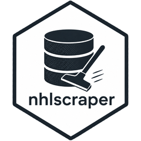
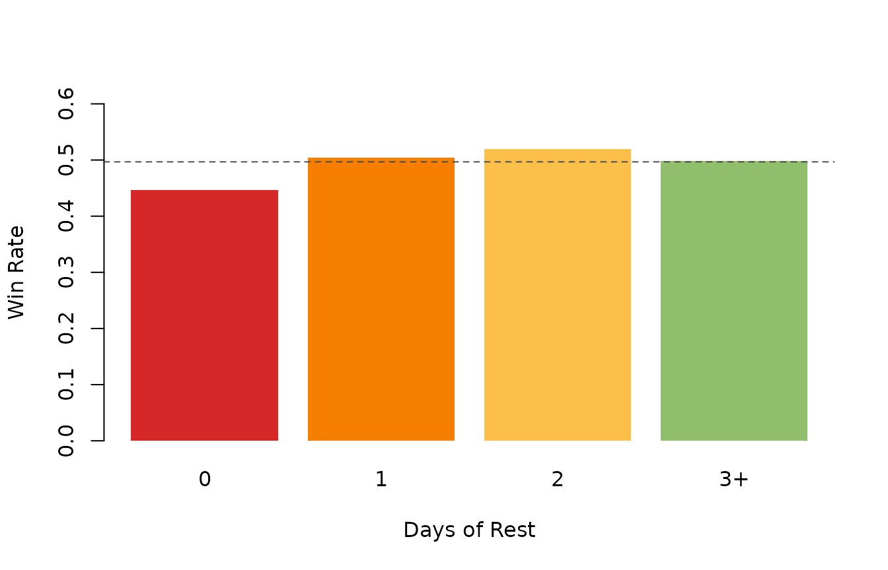
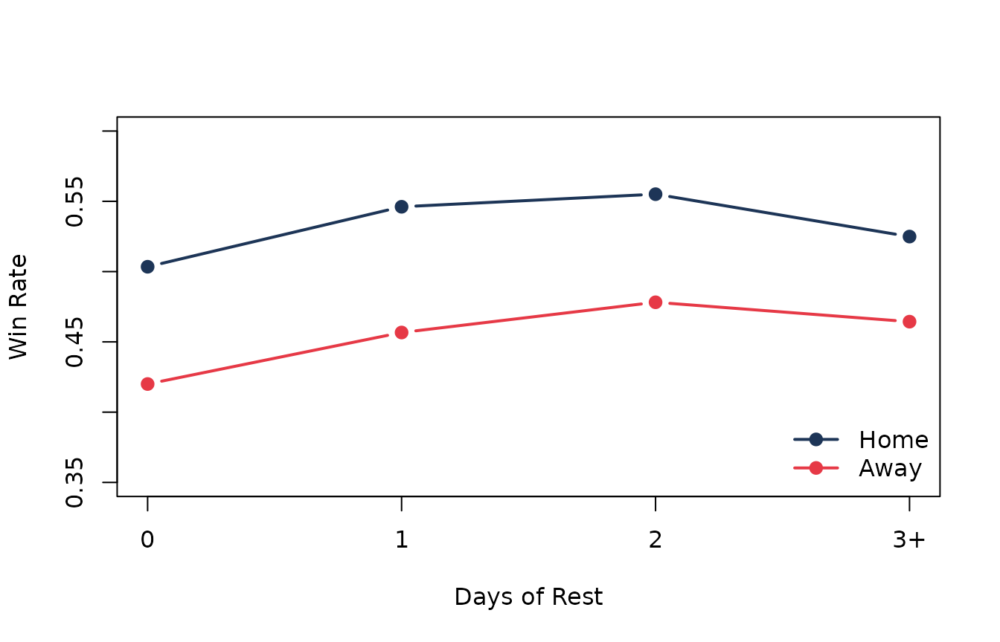

How Costly Are Back-to-Backs in the Salary-Cap Era?
Source:vignettes/back-to-back-tax.Rmd
back-to-back-tax.RmdOverview
Few schedule complaints are as universal as the back-to-back. Coaches
hate them, players complain about them, broadcasters invoke them as a
built-in excuse, and fans treat them as a warning label the moment the
puck drops. But how big is the penalty, really? Is the back-to-back tax
large enough to show up cleanly in results, or is it mostly noise
wrapped in narrative? This example uses nhlscraper::games()
and nhlscraper::teams() to build every regular-season
team-game from the salary-cap era onward, compute the number of off-days
before each game, and compare win rate and goal differential across rest
buckets. The result is a compact way to turn a schedule cliché into a
league-wide estimate.
Build Team-Game Table
nhlscraper::games() gives us one row per game. To study
rest, we need one row per team-game, which means
expanding each game into a home-team record and an away-team record.
# Pull regular-season game and team records.
games_tbl <- nhlscraper::games()
teams_tbl <- nhlscraper::teams()
# Keep salary-cap regular-season games.
games_tbl <- games_tbl[
games_tbl[['seasonId']] >= 20052006 &
games_tbl[['gameTypeId']] == 2,
c(
'gameId',
'seasonId',
'gameDate',
'homeTeamId',
'visitingTeamId',
'homeScore',
'visitingScore'
)
]
# Expand games into team-game rows.
home_games <- data.frame(
gameId = games_tbl[['gameId']],
seasonId = games_tbl[['seasonId']],
gameDate = as.Date(games_tbl[['gameDate']]),
teamId = games_tbl[['homeTeamId']],
isHome = TRUE,
goalsFor = games_tbl[['homeScore']],
goalsAgainst = games_tbl[['visitingScore']]
)
away_games <- data.frame(
gameId = games_tbl[['gameId']],
seasonId = games_tbl[['seasonId']],
gameDate = as.Date(games_tbl[['gameDate']]),
teamId = games_tbl[['visitingTeamId']],
isHome = FALSE,
goalsFor = games_tbl[['visitingScore']],
goalsAgainst = games_tbl[['homeScore']]
)
team_games <- rbind(home_games, away_games)
# Sort within team and compute off-days since previous game.
team_games <- team_games[order(
team_games[['teamId']],
team_games[['gameDate']],
team_games[['gameId']]
), ]
team_games[['previousGameDate']] <- ave(
team_games[['gameDate']],
team_games[['teamId']],
FUN = function(x) c(as.Date(NA), utils::head(x, -1))
)
team_games[['restDays']] <-
as.integer(team_games[['gameDate']] - team_games[['previousGameDate']]) - 1L
team_games <- team_games[!is.na(team_games[['restDays']]), ]
# Bucket rest and compute result metrics.
team_games[['restBucket']] <- ifelse(
team_games[['restDays']] >= 3,
'3+',
as.character(team_games[['restDays']])
)
team_games[['restBucket']] <- factor(
team_games[['restBucket']],
levels = c('0', '1', '2', '3+')
)
team_games[['win']] <- team_games[['goalsFor']] > team_games[['goalsAgainst']]
team_games[['goalDiff']] <-
team_games[['goalsFor']] - team_games[['goalsAgainst']]The key definition here is simple: if a team last played yesterday,
the next game gets restDays = 0, which is the second night
of a back-to-back.
Start With League-Wide Rest Buckets
Now we can ask the direct question: how do teams perform on zero rest compared with one, two, or three-plus days off?
# Summarize results by rest bucket.
rest_summary <- aggregate(
cbind(win, goalDiff) ~ restBucket,
data = team_games,
FUN = mean
)
rest_counts <- as.data.frame(table(team_games[['restBucket']]))
names(rest_counts) <- c('restBucket', 'games')
rest_summary <- merge(rest_summary, rest_counts, by = 'restBucket')
rest_summary <- rest_summary[
match(levels(team_games[['restBucket']]), rest_summary[['restBucket']]),
c('restBucket', 'games', 'win', 'goalDiff')
]
make_table(
rest_summary,
caption = 'Win rate and average goal differential by rest bucket.'
)| restBucket | games | win | goalDiff |
|---|---|---|---|
| 0 | 8648 | 0.447 | -0.275 |
| 1 | 27756 | 0.504 | 0.039 |
| 2 | 9441 | 0.519 | 0.119 |
| 3+ | 4723 | 0.499 | 0.038 |
The back-to-back effect is real. Teams on zero rest win about 44.7 percent of the time, compared with about 51.9 percent on two days of rest. Goal differential moves the same way: teams on zero rest are underwater on average, while teams with one or two days off are slightly positive. That is already enough to say the schedule complaint has teeth, but the context gets sharper once we split home and road games.
Plot Rest Curve
graphics::barplot(
rest_summary[['win']],
names.arg = rest_summary[['restBucket']],
col = c('#d62828', '#f77f00', '#fcbf49', '#90be6d'),
border = NA,
ylim = c(0, 0.6),
xlab = 'Days of Rest',
ylab = 'Win Rate'
)
graphics::abline(
h = mean(team_games[['win']]),
lty = 2,
col = '#4d4d4d'
)
Win rate across rest buckets in the salary-cap era.
The overall curve climbs immediately once teams move off the second night of a back-to-back. It does not rise forever, because three-plus days of rest can include rust or unusual schedule contexts, but the biggest step is clearly from zero days to one.
Separate Home and Road Context
Travel and venue matter. Back-to-backs on the road should be tougher than back-to-backs at home, and even rested teams usually perform better in their own building.
# Summarize rest effect by venue.
home_road_summary <- aggregate(
win ~ restBucket + isHome,
data = team_games,
FUN = mean
)
home_wins <- home_road_summary[
home_road_summary[['isHome']],
c('restBucket', 'win')
]
away_wins <- home_road_summary[
!home_road_summary[['isHome']],
c('restBucket', 'win')
]
names(home_wins)[names(home_wins) == 'win'] <- 'homeWinRate'
names(away_wins)[names(away_wins) == 'win'] <- 'awayWinRate'
home_road_table <- merge(home_wins, away_wins, by = 'restBucket')
home_road_table <- home_road_table[
match(levels(team_games[['restBucket']]), home_road_table[['restBucket']]),
]
make_table(
home_road_table,
caption = 'Home and road win rate by rest bucket.'
)| restBucket | homeWinRate | awayWinRate |
|---|---|---|
| 0 | 0.503 | 0.420 |
| 1 | 0.546 | 0.457 |
| 2 | 0.555 | 0.478 |
| 3+ | 0.525 | 0.464 |
Back-to-backs hurt everywhere, but they hurt more on the road. On zero rest, road teams win only about 42.0 percent of the time, while home teams on zero rest still manage about 50.3 percent.
graphics::plot(
seq_len(nrow(home_road_table)),
home_road_table[['homeWinRate']],
type = 'b',
pch = 19,
lwd = 2,
col = '#1d3557',
xaxt = 'n',
ylim = c(0.35, 0.60),
xlab = 'Days of Rest',
ylab = 'Win Rate'
)
graphics::lines(
seq_len(nrow(home_road_table)),
home_road_table[['awayWinRate']],
type = 'b',
pch = 19,
lwd = 2,
col = '#e63946'
)
graphics::axis(
side = 1,
at = seq_len(nrow(home_road_table)),
labels = home_road_table[['restBucket']]
)
graphics::legend(
'bottomright',
legend = c('Home', 'Away'),
col = c('#1d3557', '#e63946'),
pch = 19,
lwd = 2,
bty = 'n'
)
Home and road win rate across rest buckets.
The two lines stay separated almost the whole way through. Rest helps, but home ice helps too, and the schedule tax is harshest when teams have to absorb both fatigue and travel.
Fit Simple Rest Model
A quick logistic model gives us a clean way to describe those two effects together.
# Fit simple win model with rest and venue.
rest_fit <- stats::glm(
as.integer(win) ~ restBucket + isHome,
data = team_games,
family = stats::binomial()
)
rest_fit_tbl <- as.data.frame(summary(rest_fit)$coefficients)
rest_fit_tbl[['term']] <- rownames(rest_fit_tbl)
rownames(rest_fit_tbl) <- NULL
rest_fit_tbl[['term']] <- c(
'Intercept',
'One day versus zero',
'Two days versus zero',
'Three-plus days versus zero',
'Home indicator'
)
rest_fit_tbl <- rest_fit_tbl[, c(
'term',
'Estimate',
'Std. Error',
'z value',
'Pr(>|z|)'
)]
make_table(
rest_fit_tbl,
caption = 'Logistic model of wins on rest and venue.',
digits = 4
)| term | Estimate | Std. Error | z value | Pr(>|z|) |
|---|---|---|---|---|
| Intercept | -0.3222 | 0.0225 | -14.3343 | 0e+00 |
| One day versus zero | 0.1611 | 0.0251 | 6.4190 | 0e+00 |
| Two days versus zero | 0.2208 | 0.0302 | 7.3085 | 0e+00 |
| Three-plus days versus zero | 0.1268 | 0.0367 | 3.4597 | 5e-04 |
| Home indicator | 0.3348 | 0.0181 | 18.4930 | 0e+00 |
The signs all point the same way. More rest helps, and playing at home helps. The biggest rest gains come immediately when teams escape zero-rest games.
See Which Teams Handle Zero Rest Best
League averages are useful, but back-to-backs also become a fun team question: which clubs have managed them best over a large sample?
# Rank teams by back-to-back win rate.
zero_rest_tbl <- team_games[team_games[['restDays']] == 0, c('teamId', 'win')]
zero_rest_tbl <- aggregate(
win ~ teamId,
data = zero_rest_tbl,
FUN = function(x) c(winRate = mean(x), games = length(x))
)
zero_rest_tbl <- data.frame(
teamId = zero_rest_tbl[['teamId']],
winRate = zero_rest_tbl[['win']][, 'winRate'],
games = zero_rest_tbl[['win']][, 'games']
)
zero_rest_tbl <- zero_rest_tbl[zero_rest_tbl[['games']] >= 50, ]
zero_rest_tbl <- merge(
zero_rest_tbl,
teams_tbl[, c('teamId', 'teamTriCode')],
by = 'teamId',
all.x = TRUE
)
zero_rest_tbl <- zero_rest_tbl[
order(-zero_rest_tbl[['winRate']]),
c('teamTriCode', 'games', 'winRate')
]
zero_rest_tbl <- utils::head(zero_rest_tbl, 10)
make_table(
zero_rest_tbl,
caption = 'Best back-to-back win rates among teams with at least 50 zero-rest games.'
)| teamTriCode | games | winRate | |
|---|---|---|---|
| 33 | VGK | 98 | 0.561 |
| 3 | NYR | 280 | 0.561 |
| 6 | BOS | 281 | 0.491 |
| 16 | CHI | 310 | 0.484 |
| 28 | SJS | 271 | 0.483 |
| 5 | PIT | 303 | 0.482 |
| 19 | STL | 295 | 0.478 |
| 12 | CAR | 321 | 0.477 |
| 18 | NSH | 260 | 0.473 |
| 26 | LAK | 271 | 0.472 |
This is a nice example of how a broad workflow can still end in a fan-readable leaderboard. Once the team-game table exists, you can pivot from league averages to team-specific back-to-back identities without changing tools.
What We Learned
Back-to-backs are not just an excuse. In the salary-cap era, teams on
zero rest win less often and get outscored on average. The penalty eases
quickly once teams have even one off-day, and it is especially sharp for
road games. That makes this a strong high-level example for
nhlscraper: with one all-games endpoint and a little
reshaping, you can turn a familiar hockey complaint into a quantified
league-wide effect, then keep drilling down to venue splits and team
leaderboards.